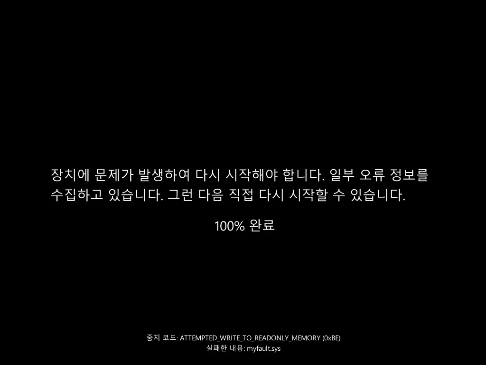

에러 코드 상세
0x000000BE · ATTEMPTED_WRITE_TO_READONLY_MEMORY
드라이버나 커널 모드 코드가 읽기 전용으로 보호된 메모리 영역에 쓰기를 시도했을 때 나타나는 코드로, 드라이버 결함이 주요 원인입니다.
Windows 11 26H2에서는 이 오류가 아래와 같은 검은 화면으로 나타납니다. 하단의 "중지 코드"와 "실패한 내용"(원인 드라이버 파일 이름)을 함께 기록해 두세요. 아래는 테스트용 가상 머신에서 Sysinternals NotMyFault로 일부러 일으킨 화면이라 실패한 내용에 이 도구의 드라이버(myfault.sys)가 표시되었으며, 실제 장애에서는 원인이 된 드라이버 파일 이름이 나옵니다.

이 코드를 어떻게 해석해야 하나요?
드라이버나 커널 코드가 읽기 전용으로 보호된 메모리 영역에 쓰기를 시도했을 때 나타납니다. 드라이버 버그나 보안 프로그램의 후킹 코드가 원인인 경우가 많습니다. 최근 설치한 드라이버와 보안 프로그램을 확인하고, 덤프의 드라이버 이름으로 원인을 좁히세요.
가능성 높은 원인
- 최근 설치한 드라이버의 메모리 보호 위반
- 커널 모드 소프트웨어 간의 충돌
- 문서 외 일반 가능성: 램 불안정으로 인한 메모리 손상
- 보안 소프트웨어의 저수준 후킹 충돌
- 손상된 드라이버 설치 파일
첫 점검 항목
- 최근 설치하거나 업데이트한 드라이버를 확인하고 제거 또는 롤백하세요.
- 문서 외 일반 점검: 메모리 진단 도구로 램 상태를 점검하세요.
- 안전 모드에서 재현 여부를 확인하세요.
- 먼저 차단·격리 기록과 허용 목록을 확인하세요. 꼭 필요할 때만 보호 기능을 짧게 중지해 테스트하고, 확인 직후 다시 켜세요.
- 제조사 홈페이지에서 해당 드라이버를 최신 버전으로 재설치해 보세요.
확인 결과에 따른 다음 단계
- 최근 드라이버를 롤백한 뒤 해결될 때 — 재발 여부만 지켜보면 됩니다.
- 메모리 진단에서 오류가 발견될 때(문서 외 일반 점검) — 램 모듈을 하나씩 장착해가며 어떤 모듈이 문제인지 확인하세요.
- 보안 프로그램을 껐을 때 해결될 때 — 다른 보안 제품으로 교체를 검토하세요.
데이터와 시스템을 보호하는 주의사항
메모리 검사가 한 번 통과했다고 즉시 정상으로 단정하지 말고 XMP·EXPO 해제 상태와 모듈별 결과를 비교하세요.
앞 단계로 해결되지 않을 때
모듈을 한 개씩 기본 속도로 장착해 슬롯을 교차하고, 안전 모드와 클린 부팅에서 같은 작업이 재현되는지 확인하세요.
복구, 초기화, 드라이버 제거처럼 되돌리기 어려운 작업 전에는 중요한 파일을 다른 물리 저장장치나 신뢰할 수 있는 백업 위치에 보관하세요.
같은 증상과 연결된 다른 오류 코드
- 0xC000021A · Critical System Process 종료
- 0x00000050 · PAGE_FAULT_IN_NONPAGED_AREA
- 0x000000EF · CRITICAL_PROCESS_DIED
- 0x000000D1 · DRIVER_IRQL_NOT_LESS_OR_EQUAL
공식 참고자료
자주 묻는 질문
- 블루스크린 코드가 한 번 떴는데 계속 지켜봐야 하나요? 이 문제(0x000000BE)가 한 번만 발생했다면 즉시 부품을 교체하기보다 재현 여부와 최근 변경 사항을 먼저 기록해두는 것으로 충분합니다. 반복된다면 그때 하드웨어 점검 범위를 넓히세요.
- 블루스크린 이후 데이터가 손상되나요? 대부분은 강제 재시작만 발생할 뿐 저장된 파일이 곧바로 손상되지는 않지만, 저장하지 않은 작업 내용은 사라질 수 있습니다.
- 미니덤프로 원인 드라이버를 알 수 있나요? WinDbg 같은 도구로 미니덤프를 분석하면 어떤 드라이버가 문제를 일으켰는지 특정할 수 있습니다.
최종 검토일: 2026-10-13